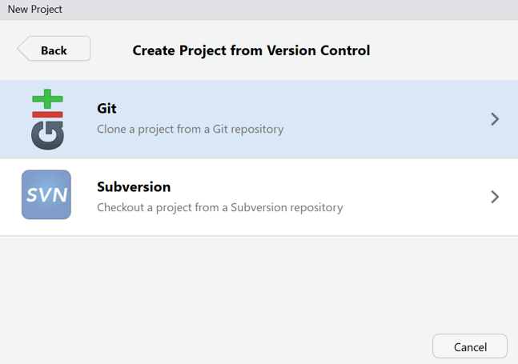
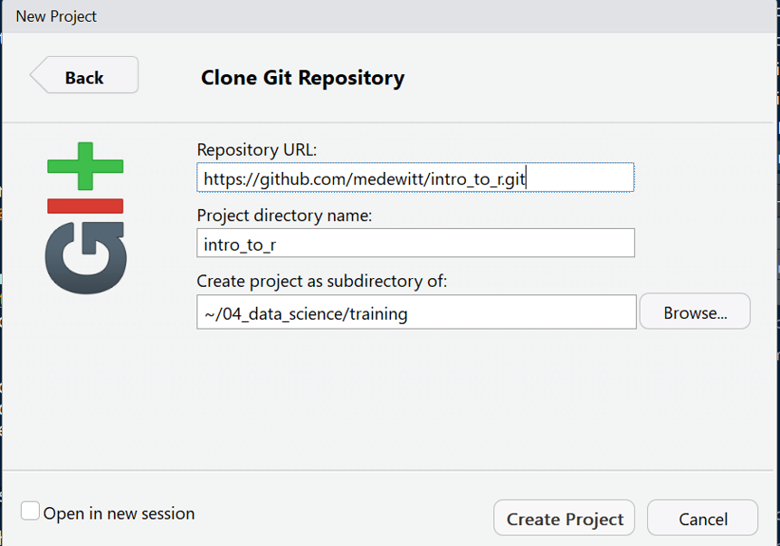

Introduction
Introduction to R
The goal of this repository is to introduce some topics to novice R users. Sometimes the most intimidating part of anything with a command line interface is starting. So let’s start with a constructive was of getting started.
Getting R
First step is to go to CRAN and download the base version of R for your operating system at https://cran.r-project.org/
Next download RStudio for your operating system. This can be done at https://www.rstudio.com/products/rstudio/download/. You want the open source RStudio Desktop. It’s free.
Next install Git. Git is a version control system that also doubles down as a great way to share information and files (especially code). Atlassian has put together a nice “how-to” here https://www.atlassian.com/git/tutorials/install-git
After you have installed all of them (in that order) open up R Studio! This will be your IDE or integrated development environment. RStudio has done an amazing job with all the features and has really made R into an enterprise ready solution.
Getting the Example Documents
The next step is pulling down these documents for use. This can be done by opening RStudio and then creating a new project
File –> New Project

From there you will select the Version Control feature to check checkout my infomation from github.
I use Git as my version control system so go ahead and select that option.

Now enter the following URL into the Repository URL field.
https://github.com/medewitt/intro_to_r.git
Select where you would like to put this collection of documents and then hit create project.

Now we’re off!
Introduction to R
dewittme.wfu.edu
Office of Institutional Research
309 Reynolda Hall
Winston- Salem, NC, 27106
Copyright © 2018 Michael DeWitt. All rights reserved.